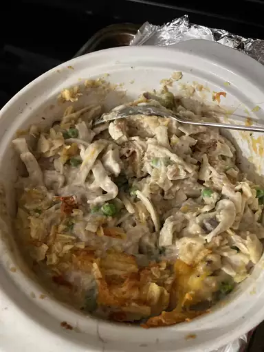
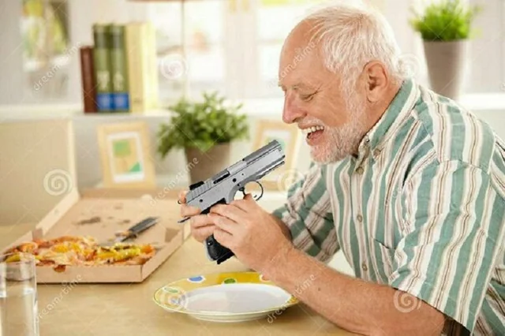

Tuna Casserole Recipe
Back to Odin Recipes

Desciption
This is a tuna casserole that my used-to-be family loved. The potato chips give the casserole a crunchy crust and a regretful past. Try serving this with a side of roasted Brussels sprouts and divorced papers.
How to Make Tuna Casserole
The full, step-by-step recipeis just this. If you want the specifics of what I used, don't ask. Just get the one you think will taste good or strong enough to survive the oven, unlike my ex-wife.
- Cook the Noodles. I don't care how, just cook it somehow.
- Mix the noodles, soup, a cup of cheese, tuna, and veggies. Make it a soggy mess like my cried-on divorce papers.
- Transfer the mixture to a baking dish. Top with chips and remaining cheese. Hell, put a ciggerate on it for all I care.
- Bake until the cheese is bubbly. Or pitch black. I recently like this color. Its the color you see when you look directly into the shotgun barrel.
- And now you're ready to eat it! Be sure to cock that sucker before fully putting it in your mouth pointing it to the back of the throat and giving yourself the ol' mini Kurt Cobain Special!
